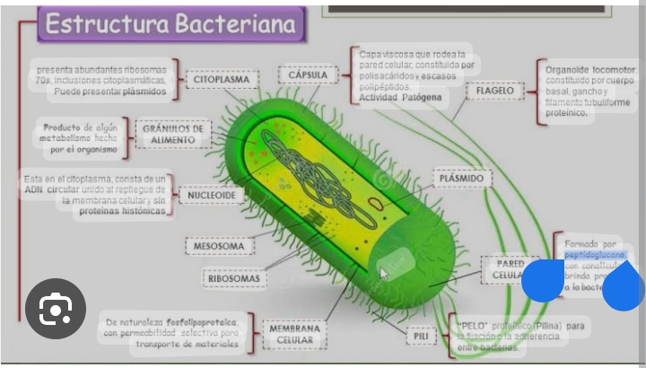

La biotecnología es una disciplina que tiene como objetivo el uso de organismos vivos para la creación de productos útiles La biotecnología es una amplia rama interdisciplinaria de las ciencias biológicas que se enfoca en la aplicación tecnológica de sistemas biológicos y organismos vivos o sus derivados. Su objetivo es crear o modificar productos y procesos para usos específicos. La biotecnología .
 vista instagram